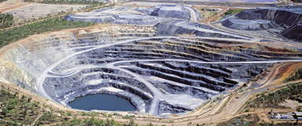
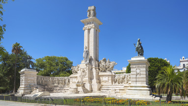

Preguntas sobre minería y recursos
- Investiga, indicando las fuentes consultadas, cuál es la causa del alto precio del cobre.
- Menciona cinco objetos de metal que uses cada día. Después, investiga qué minerales se utilizan para extraer los metales de los objetos que has mencionado. Cita las fuentes consultadas.
- Se dice que algunos minerales presentan exfoliación. Describe en qué consiste esta propiedad de los minerales e indica dos ejemplos de minerales con exfoliación.
- La roca caliza y el mármol son distintos tipos de roca, pero tienen en común que producen efervescencia cuando se pone sobre ellos una gota de ácido clorhídrico: ¿cuál es la causa de este hecho?
- Investiga las utilidades de la roca caliza. ¿Se podrían construir edificios e infraestructuras como las conocemos en la actualidad, sin usar esta roca? ¿Por qué? Cita las fuentes consultadas.
- Elabora un inventario de los monumentos que hay en tu ciudad o en tu barrio, si tu ciudad es muy grande, y averigua cuáles son los materiales con los que están realizados cada uno de ellos.
- ¿Qué finalidad tiene la restauración de una explotación minera?
Ejemplos de explotación minera

- Esta explotación minera, de la que se extrae uranio, está situada en el parque nacional de Kakadu, al norte de Australia.
- a. ¿De qué tipo de explotación minera se trata?
- b. ¿Qué actuaciones crees que serán necesarias para que la superficie del parque recupere su aspecto original?
- c. ¿Crees que es adecuado mantener una explotación de estas características en un parque nacional? ¿Por qué?
- Por parejas o pequeños grupos, realiza un póster digital en el que se muestre la forma en que puede contribuir la minería en cada uno de los Objetivos de Desarrollo Sostenible.
- En los medios de comunicación se afirma que la mina más rentable entre todas las que se explotan en la actualidad es el reciclaje de los pequeños electrodomésticos y dispositivos electrónicos. Averigua la validez de esta afirmación. ¿Qué metales se pueden extraer a partir de este reciclaje?
- Localiza un paisaje de la localidad que te llame la atención por sus características estéticas, biológicas o geológicas. Divide un folio en tres partes y dibuja el paisaje que has seleccionado. En la parte central dibuja cómo crees que podría afectar la explotación de una mina a cielo abierto y en la parte inferior realiza un dibujo recreando el aspecto de la región después de hacer algunas actuaciones de restauración del paisaje.
- La instalación de placas fotovoltaicas para producir electricidad supone un impacto en el consumo de combustibles fósiles y en la reducción de la huella de carbono. Investiga qué recursos minerales son necesarios para las placas fotovoltaicas.
- La uraninita es un mineral con alto contenido en uranio que se utiliza para la producción de energía. Expón un argumento a favor y otro en contra respecto al uso de minerales de uranio para la producción de energía.
- En 1915 Wegener creó que el fondo oceánico era una superficie lisa, carente de formas en su relieve. Sin embargo, fue a mediados del siglo XX cuando la cartografía del fondo oceánico se pudo realizar con los datos aportados por el sonar y las medidas de profundidad de los océanos.
- Investiga y elabora un artículo científico que ayude a difundir la aportación científica de Marie Tharp al conocimiento del relieve del fondo oceánico. Indica las fuentes consultadas.
